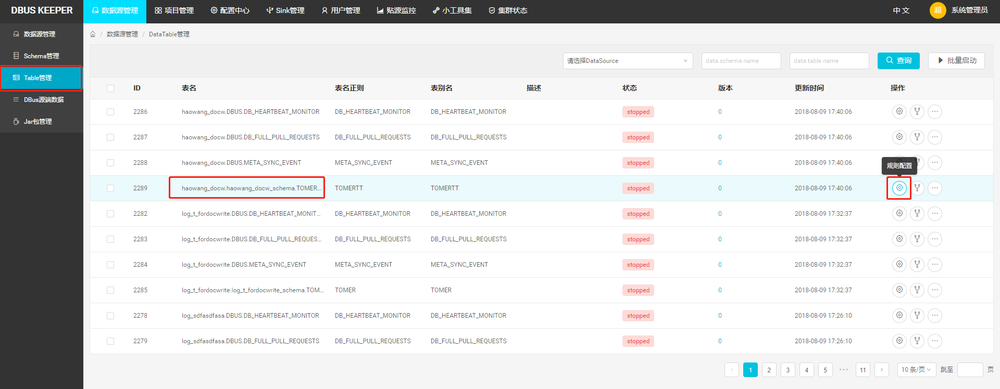
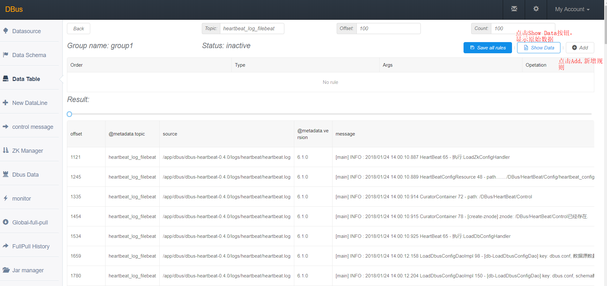
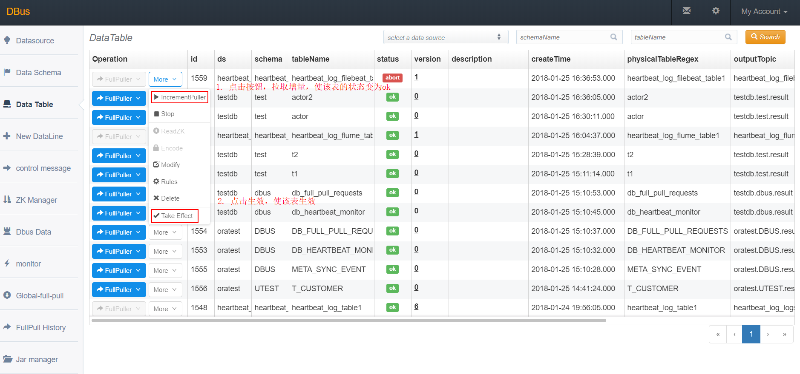
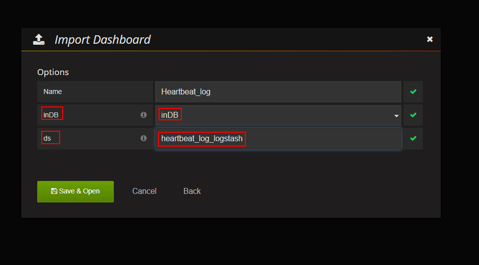

logstash作为数据源接入DBus
系统架构：

总体说明：
DBus可以接入三种数据源：logstash、flume、filebeat，下面以使用logstash为数据抽取端，抽取DBus自身产生的监控和报警日志数据。DBus监控和报警模块部署在 dbus-n2和dbus-n3 上，路径为：/app/dbus/dbus-heartbeat-0.4.0/logs/heartbeat/heartbeat.log。因此，logstash的日志数据抽取端也要部署在dbus-n2和dbus-n3 上。
我们在dbus-n2，dbus-n3两台机器上分别部署了logstash程序，用于对普通日志进行抽取，两台机器上的logstash程序配置完全一致。心跳数据由logstash自带的心跳插件产生（心跳数据的作用是便于DBus对数据进行统计和输出），logstash程序抽取到kafka topic中的数据中既有普通格式的数据，同时也有心跳数据，而且这两种格式的数据分别来自不同的主机。
| No | 域名 | 是否有监控和报警日志？ | 是否部署logstash？ | 是否部署心跳shell脚本？ | 抽取日志 | 输出topic |
|---|---|---|---|---|---|---|
| 1 | dbus-n1 | 否 | 否 | 否 | 无 | 无 |
| 2 | dbus-n2 | 是 | 是 | 否 | 1.DBus自身产生的监控和报警日志 | heartbeat_log_logstash |
| 3 | dbus-n3 | 是 | 是 | 否 | 1.DBus自身产生的监控和报警日志 | heartbeat_log_logstash |
主要配置步骤：
1 配置 和 安装logstash源相关
2 一键加线和配置
3 检验结果
1 配置 和 安装logstash源相关
监控和报警日志在dbus-n2和dbus-n3上，因此 logstash的日志数据抽取端也要部署在dbus-n2和dbus-n3 上。
1.1 logstash安装
-
logstash版本 DBus使用的logstash的版本是v5.6.1。
-
下载
https://www.elastic.co/downloads/past-releases/logstash-5-6-1](https://www.elastic.co/downloads/beats)
dbus-logstash目录说明
目录结构：
dbus-logstash包含检测脚本、自动配置脚本、心跳脚本以及启停脚本。

logstash目录 :logstash程序文件夹，用户可手动更改logstash配置文件，也可以使用dbus的检测和部署脚本（即log-auto-check-0.5.0文件夹）
start.sh : 启动脚本，一键启动logstash程序
stop.sh : 停止脚本，一键停止logstash程序
log-auto-check-0.5.0 : 内部含有检测kafka连通性及自动更换logstash配置的功能
readme : 使用文档说明
dbus-agent-heartbeat : 放置定时心跳脚本产生的心跳日志
1.2 log-auto-check包说明

conf : 包含log-conf.properties文件，该文件中可以对logstash进行一些通用配置
checkDeploy.sh : 1）检测kafka连通性：./checkDeploy.sh
2) 自动替换logstash配置：./checkDeploy.sh deploy
reports : 里面含有检测报告及对logstash进行的哪些配置修改。
1.2. logstash配置文件说明
以logstash抽取DBus的监控和报警日志为例，说明该如何去写logstash的配置文件。我们在logstash的目录下面新建了一个etc文件夹，用于存放logstash的抽取配置文件，然后在etc目录下新建了一个heartbeat.conf的文件参考链接，下面解析下该文件的各项配置。
input {
file {
path => ["/app/dbus/dbus-heartbeat-0.4.0/logs/heartbeat/*.*"] # 所要读取的日志文件路径
sincedb_path => "/app/dbus/logstash-5.6.1-heartbeat/etc/sincedb_heartbeat" # 保存了抽取文件的inode、文件偏移量等信息，自动生成
codec => multiline {
pattern => "^\[" # 根据所要合并的多行进行设置（此处为正则表达式，表示以[为开头的行才作为一条记录，其余的向前合并）
negate => "true"
what => "previous" # 表示不符合上述pattern的行，向前合并
}
type => "heartbeat_log_logstash" # 改成相应的数据源名，这里我们是要通过logstash对dbus心跳日志进行抽取，所以数据源名定义为heartbeat_log_logstash
start_position => "end" # 表示从什么位置开始读取文件数据，默认是结束位置；
#close_older => 3600 # fd 无数据关闭文件时间间隔默认 1小时 3600
#max_open_files => 4095 # 运行打开最大文件上线，默认 4095
#add_field => {"test"=>"test"} # 添加自定义的字段 未使用
#tags => "tag1" # 增加标签 未使用
#discover_interval => 15 # 设置多长时间扫描目录，发现新文件 使用默认即可
#stat_interval => 1 # 设置多长时间检测文件是否修改 使用默认即可
#sincedb_write_interval => 15 # sincedb 写文件时间频率 默认 15秒
}
#logstash本身的心跳信息
heartbeat {
message => "epoch"
interval => 60 # 每60s产生一次心跳
type => "dbus-heartbeat" # 心跳类型定义为dbus-heartbeat
}
}
filter {
if [type] == "heartbeat_log_logstash" { # 与上面input file中的type名对应，意为对上述input file中取得的数据进行进一步过滤抽取
grok {
patterns_dir => "../patterns" # 此处为自定义的pattern，如果要添加或修改自定义的pattern,可以放在此目录下。下面HEARTBEATTIMESTAMP即是定义在此目录下的
match => {
# logstash本身配置了约120种pattern，其中DATA、LOGLEVEL和GREEDYDATA都在其中，详细参考https://github.com/logstash-plugins/logstash-patterns-core/tree/master/patterns
"message" => "\[%{DATA:thread}\] %{LOGLEVEL:level} ?\: %{HEARTBEATTIMESTAMP:timestamp}%{GREEDYDATA:log}"
}
}
}
}
output {
# stdout{codec=>rubydebug} # 将抽取日志输出到控制台
# 代表输出到kafka，以下要配置kafka的服务器IP，端口，topic id
kafka {
bootstrap_servers => "dbus-n1:9092,dbus-n2:9092,dbus-n3:9092" # kafka 服务器IP:端口
topic_id => "heartbeat_log_logstash" # 要输出到kafka的topic
acks => "all"
compression_type => "lz4"
retries => 3
codec => json {
charset => "UTF-8"
}
batch_size => 1048576 # batch max than 1MB size, larger than it, send batch
linger_ms => 1000 # batch wait 1 seconds
max_request_size => 10485760 # set as 10MB, max_request_size => Default value is 1048576
buffer_memory => 67108864 # default size 33554432=32M. 67108864=64M
#message_key => "heartbeat-logstash"
# max_request_size => Default value is 1048576
# send_buffer_bytes => Default value is 131072
# key_serializer => Default value is "org.apache.kafka.common.serialization.StringSerializer"
# value_serializer => Default value is "org.apache.kafka.common.serialization.StringSerializer"
}
}
1.4. dbus-logstash启动
-
修改通用配置： 修改log-auto-check-0.5.0/conf目录下的log-conf.properties文件，对于logstash，只需要修改kafka地址、日志类型及logstash相关配置即可。
filebeat相关配置项说明：
logstash.base.path： logstash配置文件路径 logstash.extract.file.path： logstash抽取文件路径，如果是多个文件，用逗号分隔即可 logstash.sincedb.path： 存放logstash 文件记录位置的文件路径
logstash.file.start.position: logstash是从beginning，还是end位置开始读数据
logstash.dst.topic: logstash的目的topic

-
自动检测：
执行命令：./checkDeploy.sh进入log-auto-check-0.5.0目录，执行checkDeploy.sh脚本，然后查看reports目录下的检测报告，可以查看kafka连通是否正常。
-
自动部署：
执行命令：./checkDeploy.sh deploy进入log-auto-check-0.5.0目录，执行checkDeploy.sh脚本，可以自动将conf目录下的修改项替换到logstash配置文件中。
-
启动方式：
执行命令：./start.sh启动脚本，该脚本会启动logstash程序。如果没有报错，则会提示filebeat和心跳程序启动成功。如果有错误，会提示相应错误信息，请根据错误信息进行修改。
-
验证logstash：
执行命令：ps -aux | grep logstash查看logstash进程是否存在。
-
停止方式：
执行命令：./stop.sh停止脚本，停止logstash序。
1.4. logstash验证
读取kafka的topic: heartbeat_log_logstash，确认是否有数据：
-
进入kafka安装目录。
-
执行以下命令，查看数据，如果有数据，则说明logstash可以成功抽取文件：
bin/kafka-console-consumer.sh --zookeeper dbus-n1:2181,dbus-n2:2181,dbus-n3:2181/kafka --topic heartbeat_log_logstash -
logstash的心跳数据样例：
{ "host": "dbus-n3", "@version": "1", "clock": 1516762833, "@timestamp": "2018-01-24T03:00:33.831Z", "type": "dbus-heartbeat" } -
logstash抽取之后产生的数据样例：
{ "path": "/app/dbus/dbus-heartbeat-0.4.0/logs/heartbeat/heartbeat.log", "@timestamp": "2018-01-24T02:59:39.494Z", "level": "WARN", "log": "CheckHeartBeatEvent 196 - 节点:/DBus/HeartBeat/Monitor/test/dbus/db_heartbeat_monitor/0,状态:异常,报警次数:1,超时次数:1", "@version": "1", "host": "dbus-n3", "thread": "check-heartbeat-event", "message": "[check-heartbeat-event] WARN : 2018/01/24 10:59:37.906 CheckHeartBeatEvent 196 - 节点:/DBus/HeartBeat/Monitor/test/dbus/db_heartbeat_monitor/0,状态:异常,报警次数:1,超时次数:1", "type": "heartbeat_log_logstash", "timestamp": "2018/01/24 10:59:37.906 " } -
2 DBus 一键加线和配置
### 2.1 DBus一键加线
logstash的新建线过程和filebeat的新建线过程是一样的，这里的图片引用了filebeat的建线过程，请知悉。
logstash将数据抽取到Kafka topic后，DBus程序就可以对该topic数据进行处理了，在DBus web进行数据源和table的配置工作。
-
新建数据源：首先新建数据源，进入New DataLine页面，由于我们是用logstash对心跳日志进行抽取，因此数据源的名字可以起的有意义一些，Type选择log_logstash，topic必须和logstash配置文件中的topic一致。

-
新增表：点击Add Table按钮，新增一张表，稍后会对该表进行规则配置，新增完后，点击下一步。

-
启动log_processor程序：启动storm程序，对数据进行处理，后面会对新增表进行规则配置。

启动结果：点击启动按钮后，当Status变为running后，表示启动成功，如果启动不成功，可以通过log定位失败原因。

### 2.2 数据源配置修改
因为我们在dbus-n1和dbus-n2两台机器中分别配置了filebeat程序，用于对数据进行抽取，而DBus监控和报警模块会对来自这两台机器的数据流进行监控，因此，我们需要在数据源配置信息中，将多台主机的host信息填入dsPartition选项中，供dbus监控和报警模块使用，注意：如果主机的hostname是ip，请将”.”转换为”_“，例如：127.0.0.1应该要转换为127_0_0_1。
- 修改数据源信息：点击modify按钮进行修改。

- 填写host信息：该数据源的数据可能来自于多个主机上的filebeat程序，要在dsPartition中，配置上所有主机的host信息，为DBus监控和报警模块使用。

### 2.3. 配置规则
-
**进入Data Table页面，查看新增加的表，点击Rules按钮，为该表配置规则

-
新增规则组：点击Add group按钮，新增一个规则组，点击规则组名字，进入规则配置页面。

-
配置规则: topic是在logstash中配置的topic，即源topic，可以指定offset，获取固定区间的数据，然后点击show data按钮，此时会在页面下方显示原始数据，点击Add，新增一些过滤规则，对数据进行处理。配置完规则后，查看过滤出的数据，点击Save all rules按钮，保存规则，并返回到规则组页面。

-
升级版本：首先使规则组的Status状态变为active，然后点击升级版本（每次增加、删除或修改规则组后，都应该对该表升一次版本）。

-
**拉取增量: ** 使该表的状态变为ok，点击Take Effect生效按钮，使该表生效（当后续再对该表进行规则组配置操作后，也应该对该表再执行Take Effect生效按钮，使该表能够获取到最新的规则配置）。

-
3 验证数据
我们可以在grafana配置以下，看看实际流量情况。
- **上传grafana配置文件参考链接： **点击Import，上传grafana json配置文件。

-
选择InDB数据库：ds的名字必须与新建数据线中的数据源名字一致。 
- 之前新增表的流量监控信息，type表示来自于哪台主机的数据

- _unknown_table_表示不满足任何表的数据